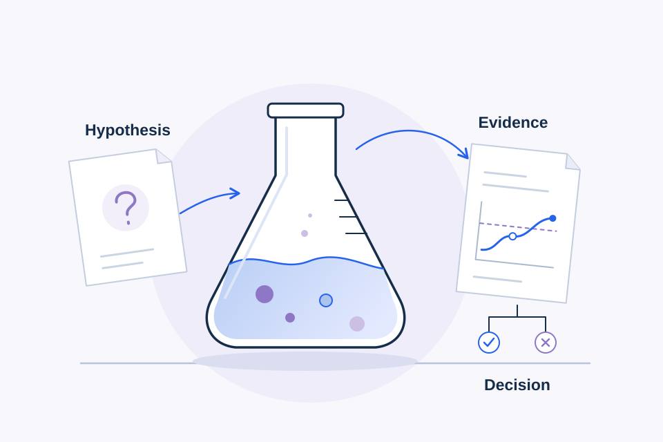

Experiments & architecture
How I Think About POCs Before Writing Code
A proof of concept should turn the riskiest assumption into evidence—and leave the team with a decision.

In this article · 14 sections
Proofs of concept often start too late.
Someone has an idea.
The team gets excited.
A repository gets created.
A framework gets selected.
Someone starts building the UI.
Two weeks later there is a polished demo.
Then someone asks:
What exactly were we trying to prove?
That's the question I think should come first.
A POC isn't just a smaller version of a product.
It's an experiment designed to remove uncertainty.
If you don't know what uncertainty you're trying to remove, it's easy to build a lot of software without learning very much.
Start with the unknown
Before writing code, I want to know:
What don't we know that matters enough to test?
Imagine a customer wants an integration between two systems.
The uncertainty might be:
Can we authenticate against their API?
Can we retrieve the required data?
Can we transform it into our model?
Can their environment receive our webhook?
Can the API handle the required volume?
Can we satisfy the security constraints?
Those are very different POCs.
If the uncertainty is API authentication, building a polished dashboard doesn't prove anything useful.
If the uncertainty is model quality, spending a week implementing account settings doesn't help.
If the uncertainty is device connectivity, don't start by polishing the mobile interface.
The riskiest assumption should shape the prototype.
Write the hypothesis
I like thinking about a POC as a technical hypothesis.
Something like:
Given valid customer credentials, our service can retrieve the required records from API X, transform them into our internal representation, and process them without manual intervention.
Now we can test something.
Better still, define success.
For example:
Given:
- valid sandbox credentials
- representative records
- documented API access
Prove:
- authentication succeeds
- required fields are available
- records can be retrieved
- records can be mapped
- errors can be detected
- the expected downstream action can occur
Now “it worked” has a meaning.
A POC is not a tiny production system
This distinction saves a lot of time.
Production systems may need:
authentication, authorization, observability, redundancy, scaling, deployment automation, accessibility, billing, analytics, support tooling, disaster recovery, extensive testing, and a long list of edge cases.
A POC may not.
That doesn't mean the code should be incomprehensible.
It means the prototype should invest in the parts necessary to answer the question.
If we're proving whether a third-party API exposes the required data, I may not need a complete user-management system.
If we're proving whether retrieval can find the correct documents, I don't need to build the final design system first.
Build the riskiest thing first
This is probably the biggest practical change I'd make to many prototypes.
Teams naturally gravitate toward the easiest visible work.
UI is satisfying.
You can show progress.
Stakeholders can react to it.
But if the entire concept depends on something uncertain behind the UI, start there.
Suppose you're building an AI application.
The risky assumption might be:
“The model can reliably classify these requests.”
Test that with representative data first.
Or:
“RAG will retrieve the correct internal document.”
Build the retrieval evaluation before the polished chat interface.
Or:
“The customer's network will allow this connection.”
Test the connection.
The POC should attack the assumption most capable of killing the idea.
Separate what we know from what we think we know
A useful exercise before implementation is to classify assumptions.
You have facts.
You have assumptions.
And you have unknowns.
Those categories are easy to blur.
“The API supports webhooks” may be documented.
“The customer's account has access to webhooks” may be an assumption.
“The webhook payload contains the field we need” may still be unknown.
That distinction matters.
A prototype should convert important unknowns into evidence.
Success criteria should exist before the demo
A weak POC success criterion is:
“Build a working demo.”
A stronger criterion is:
“Demonstrate that a new record created in System A can be detected, transformed, and written to System B using the required fields.”
Now the demo proves something.
For an AI retrieval POC:
“For a representative evaluation set, the retrieval layer should consistently surface the approved source containing the information required to answer each question.”
Notice that this is different from:
“The chatbot gives good answers.”
We're testing a specific layer.
That makes debugging easier too.
Instrument the prototype
POCs often have almost no observability because “it's just a prototype.”
Then something fails during the evaluation and nobody knows why.
You don't need a full production monitoring stack.
You do need enough visibility to understand the experiment.
For an API integration:
Request ID
Endpoint
Response status
Latency
Transformation result
Failure reason
For an AI workflow:
Input / test case ID
Retrieved sources
Model
Latency
Structured output
Validation result
Tool result
Failure state
A POC is an experiment.
Experiments need evidence.
Prototype architecture still matters
Disposable doesn't have to mean chaotic.
A POC can use shortcuts while still expressing the intended system boundaries.
Suppose I am testing an AI workflow.
I would rather have:
Application
↓
AI Service
↓
Provider Adapter
than model-provider calls scattered through UI components.
Why?
Because even in a prototype, architecture tells us something.
Can we change the model?
Can we test the application without calling the model?
Can we add validation?
Can we observe requests in one place?
The POC shouldn't prematurely become production architecture.
But it should help us learn about production architecture.
Document the shortcuts
This is one of the most important POC artifacts.
Suppose the prototype uses:
- hardcoded test users,
- a local database,
- manual secrets,
- no retry logic,
- a single model,
- simplified permissions,
- test data.
That's fine if everyone understands it.
It's dangerous when a successful demo causes people to conclude:
“We're basically done.”
No.
You proved the concept.
You did not prove production readiness.
A good POC should end with two separate conclusions:
What did we prove?
and
What remains before production?
Security questions should appear early
A prototype doesn't need every production control.
But if the entire concept depends on a security assumption, don't postpone that assumption until the end.
Examples:
Can the customer authorize the integration?
Can we obtain the required scopes?
Can data legally or contractually leave the environment?
Does the identity model support the workflow?
Can tenant data remain isolated?
Does the provider retain submitted data?
If any of those answers can kill the architecture, they belong in the POC conversation.
The same applies to AI
AI prototypes are especially easy to overestimate because the first demo can be so impressive.
A model can answer ten handpicked questions beautifully.
That does not prove the system works.
What happens with ambiguous questions?
What happens with missing knowledge?
What happens when retrieval is wrong?
What happens when the model returns malformed output?
What happens when a user asks for something outside the intended scope?
What happens when the model provider times out?
What happens when the prompt changes?
What happens when the input is adversarial?
What does each request cost?
How long does it take?
The POC doesn't necessarily have to solve all of those.
But it should expose them.
The output of a POC should be a decision
This is the part I think gets overlooked.
The artifact isn't really the prototype.
The artifact is the knowledge produced by the prototype.
At the end, I want to be able to say:
The integration is technically viable, but the customer needs a different API tier.
Or:
Retrieval works well enough with structured search that we don't need a vector database yet.
Or:
The model can perform the task, but latency makes it unsuitable for the synchronous workflow.
Or:
The concept works, but the production security requirements change the architecture enough that we need another design pass.
Or even:
This isn't worth building.
That last answer is completely valid.
A POC that prevents six months of unnecessary engineering is successful.
Don't turn every POC into a product
There's organizational pressure once something is visible.
People see a working prototype and immediately start asking:
“When can customers use it?”
That's understandable.
But prototypes often hide the hardest production problems.
The gap might include:
POC
↓
Security
↓
Permissions
↓
Failure handling
↓
Observability
↓
Scale
↓
Data migration
↓
Accessibility
↓
Testing
↓
Deployment
↓
Support
↓
Production
That gap can be larger than the prototype itself.
Recognizing it isn't pessimism.
It's engineering.
What I want before I start coding
I don't need a fifty-page specification.
I need clarity about a few things:
What uncertainty are we removing?
Why does it matter?
What assumption are we testing?
What evidence counts as success?
What is intentionally out of scope?
What could invalidate the approach?
What will we learn even if it fails?
Once those questions are clear, the code becomes easier to reason about.
Because now the code has a job.
It's not there to prove that we can build something.
It's there to help us decide whether we should.
Written by Lew Akil — engineer, product builder, and technical storyteller.